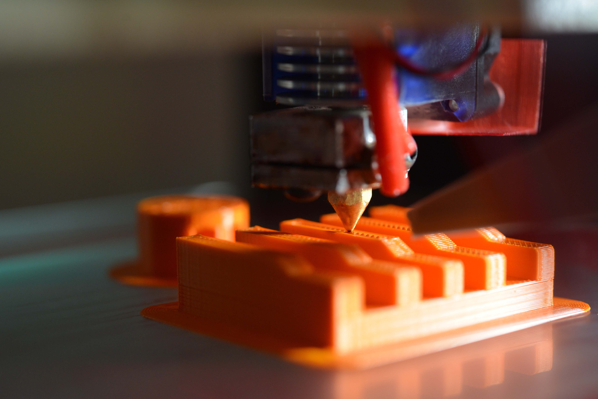
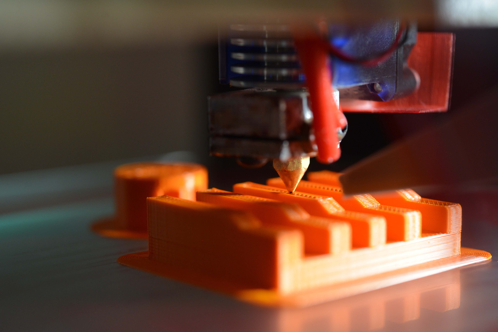

Computertechnologie
Mijn werktijd en vrije tijd spendeer ik veelal achter de PC en heb reeds een aantal leuke werk gerelateerde- en thuisprojecten gerealiseerd, zoals:
Prioriteitsdatabank:
Als ik aangeworven werd als Lab Technician heb ik samen met mijn leidinggevende een prioriteitsdatabank uitgewerkt in Micosoft Access, wat een zeer leerrijke ervaring zo bleek. Deze databank fungeerde niet enkel als takenlijst, maar ook de opslaglocaties van metallografische samples en restmaterialen werden bijgehouden. Het project was wel beperkt tot het Access programma waardoor de eindgebruiker zelf niet kon raadplegen wat de status van zijn aanvra(a)g(en) was.
Met dit project heb ik kennis gemaakt met databanken, aanmaken van tabellen, filteren met behulp van querries en SQL en visualisaties maken met forms.
Synology NAS:
Ons gezin maakt gebruik van een Synology-NAS waarbij met behulp van cloud-applicaties de foto’s van onze mobiele telefoon gesynkroniseert worden op de NAS. Wat home-security betreft heb ik een home-surveillance systeem geïmplementeerd waarbij de beelden van een aantal camera’s opgenomen en bewaard worden op de NAS. Met behulp van de Docker-applicatie draait er een Pi-Hole emulatie waarbij via een virtueel netwerk de toestellen aangesloten op het thuisnetwerk veelal reclamevrij opereren, uitgebreid met een OpenVPN kunnen ook alle mobiele apparaten die zich buiten het thuisnetwerk bevinden ook reclamevrij opereren. Met dit project heb ik kennis kunnen maken met thuis-netwerken en de basisprincipes bij het opzetten van een server systeem wat ik reeds opgestoken had in een voormalige opleiding Graduaat Informatica.
Hackintosh:
Hoewel dit project zich in de grijze zone bevind, vond ik het een leuke uitdaging om het Apple Mackintosh (MacOS) besturingssysteem te installeren op een PC, dit met behulp van de Clover bootloader. Na veel opzoekwerk en trial-and-error ben ik erin geslaagd om alle functies van het MacOS besturingssystem feilloos te laten werken. Met dit project heb ik niet enkel kennis gemaakt met het MacOS besturingssysteem, maar ook met de Linux terminal en de Linux commando’s. Dit gaf me ook de opportuniteit om de Mac systeemstructuur te keren kennen, zoals:
- boot flags
- kernel extensions
CAD & 3D printen
Dingen creëren zit in mijn bloed en zoals het spreekwoord zegt: “Bloed kruipt waar het niet staan kan” ben ik in mijn vrije tijd regelmatig bezig met technische 3D creaties die ik op mijn 3D printer realiseer. Een beperkt aantal van mijn creaties zijn terug te vinden op Thingiverse. Mijn 3D printer heb ik uitgerust met een Raspberry Pi 4 waarop een Octoprint-distributie opereert. Hierdoor kan ik mijn 3D creaties rechtstreeks naar mijn 3D printer zenden en verder in de gaten houden met behulp van een camera die verbonden is met de Raspberry Pi. Ook buiten het thuisnetwerk kan ik met behulp van OpenVPN mijn 3D printer consulteren.
Recreatief sporten, mountainbiken
“Mens sana in corpore sano”, een oud spreekwoord dat allesomvattend is. Mijn vrije tijd spendeer ik graag op mijn Canyon mountainbike, in groep of met een kameraad. Ook ga ik graag een eindje wandelen met het gezin of loop ik op de loopband. Veel van mijn projecten hebben vorm gekregen tijdens het sporten, dit geeft me immers tijd om te reflecteren.
 
